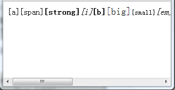

HG1002: Chrome 和 Safari 中标签紧密相邻的行内元素在折行显示时存在错误
标准参考
关于 'display:inline' 的详细信息，请参考 W3C CSS 2.1 规范 9.2.4 The 'display' property。
问题描述
Chrome 和 Safari 中标签紧密相邻的行内元素在折行显示时存在错误。
造成的影响
可能造成不同浏览器中标签紧密相邻的行内元素显示效果不一致。
受影响的浏览器
| Chrome Safari |
|---|
问题分析
这个问题是 WebKit 引擎在处理紧密相连的内联元素时存在自动换行计算上的 Bug 。
针对此问题，我们使用以下测试样例来说明，分析以下代码：
<body>
<a>[a]</a><span>[span]</span><strong>[strong]</strong><i>[i]</i><b>[b]</b><big>[big]</big><small>[small]</small><em>[em]</em><dfn>[dfn]</dfn><code>[code]</code><samp>[samp]</samp><kbd>[kbd]</kbd><var>[var]</var><cite>[cite]</cite><abbr>[abbr]</abbr><acronym>[acronym]</acronym><sub>[sub]</sub><sup>[sup]</sup><bdo>[bdo]</bdo>
</body>
减小浏览器窗口尺寸后，在各浏览器中表现如下：
| Chrome Safari | IE6 IE7 IE8 Firefox Opera |
|---|---|
|  |  |
通过上图比较可以发现，在非 WebKit 引擎的浏览器内，不管元素排列如何紧密，都可以随着布局大小自动换行显示； 而在 WebKit 引擎的浏览器中所有紧密相连的内联元素都在同一行显示，并且与文档模式无关。
解决方案
避免出现紧密连接的内联元素标签，可以在每个标记之间加入空格或者换行符来避免这个问题。
参见
知识库
相关问题
测试环境
| 操作系统版本: | Windows 7 Ultimate build 7600 |
|---|---|
| 浏览器版本: |
IE6 IE7 IE8 Firefox 3.6.8 Opera 10.60 Chrome 6.0.472.0 dev Safari 5.0(7533.16) |
| 测试页面: | webkit_inline.html |
| 本文更新时间: | 2010-07-28 |
关键字
inline auto-inline-feed 标签紧密相邻 行内元素 换行